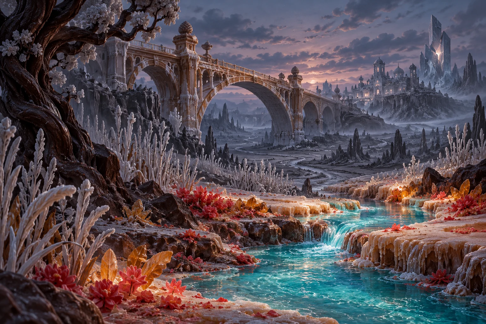

<!doctype html><html lang="es"><meta charset="utf-8"><meta name="viewport" content="width=device-width,initial-scale=1"><title>Sugar Clash · Estudio de restauración</title><style>
*{box-sizing:border-box}body{margin:0;padding:32px;background:#141820;color:#eee7db;font:16px system-ui,sans-serif}header{max-width:1200px;margin:0 auto 24px;display:flex;gap:30px;align-items:center}header img{width:150px;height:auto}h1{font-size:26px;margin:0 0 10px}p{color:#adb5b5;line-height:1.6;margin:0}.states{display:grid;grid-template-columns:repeat(3,minmax(0,1fr));gap:20px;max-width:1200px;margin:auto}figure{margin:0;border:1px solid #414b56;background:#20262e;border-radius:14px;overflow:hidden}.scene{width:100%;aspect-ratio:4/5;object-fit:cover;filter:saturate(var(--restored)) brightness(.9)}figcaption{padding:18px;color:#c8ab7d;font-weight:700}figcaption small{display:block;font-size:12px;color:#adb5b5;font-weight:400;margin-top:6px}footer{max-width:1200px;margin:25px auto;color:#adb5b5;font-size:12px}@media(max-width:700px){body{padding:20px}.states{grid-template-columns:1fr}.scene{aspect-ratio:4/3}header{align-items:flex-start;gap:15px}header img{width:100px}h1{font-size:20px}}
</style><header><div><h1>El color vuelve.</h1><p>El mismo mundo, tres estados de restauración.<br>La interfaz conserva su base oscura.</p></div></header><main class="states"><figure><figcaption>Sin restaurar<small>Saturación 0 · casi monocromo</small></figcaption></figure><figure><figcaption>A mitad del camino<small>Saturación 0,5 · regresa el color</small></figcaption></figure><figure><figcaption>Color recuperado<small>Saturación 1 · luz entre la oscuridad</small></figcaption></figure></main><footer>Estudio visual estático. Estos estados ilustran el tratamiento del arte; no conceden progreso ni representan victorias de campaña.</footer></html>
